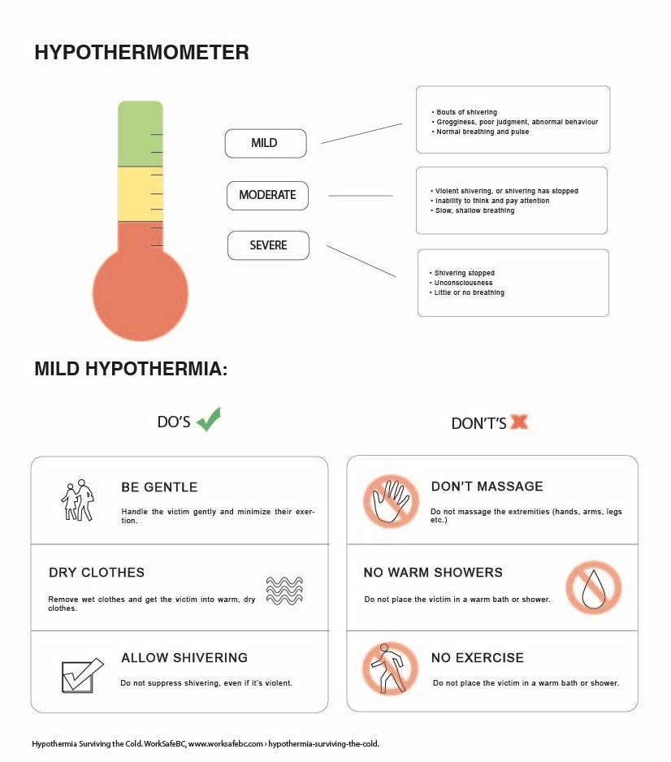
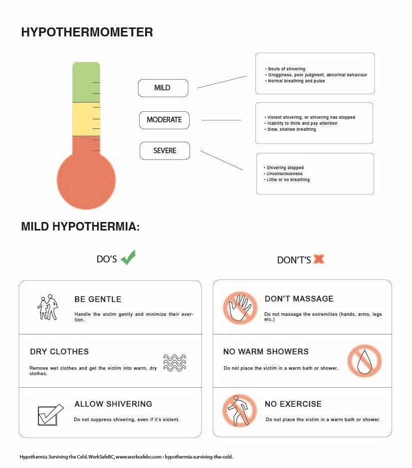
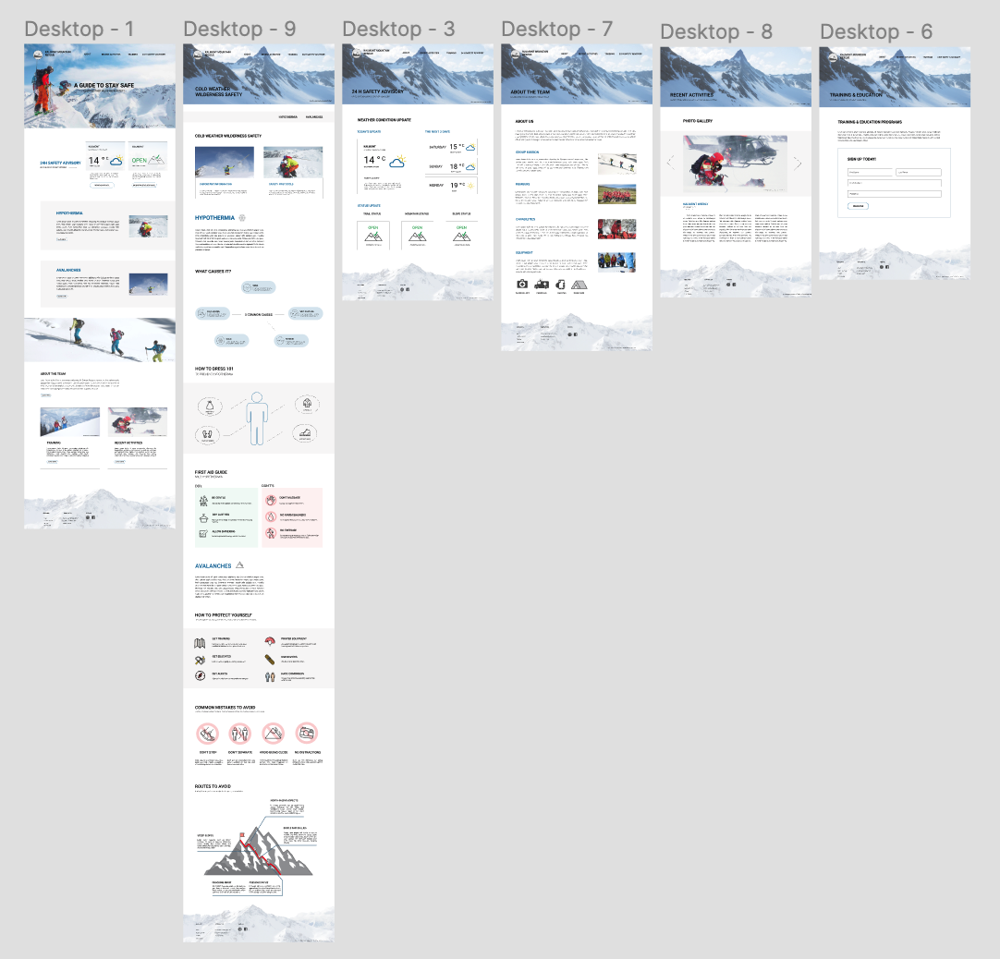

Context
4 weeks, Summer 2020
Summer 2020 SIAT project
Team & role
- Wendy Zhang
- Orion Situ
- My role: project lead, low-mid- high fidelity mock-up & wireframing, prototyping, information architecture
4 weeks, Summer 2020
Summer 2020 SIAT project
For the final IAT 235 project, I was given the task I had to build a mountain rescue website for the fictional town of Kalmont. The main design goal of this project was helping users to acquire important safety information about hypothermia and avalanches and guide them through essential safety protocols.
The target user includes tourists visiting ski resorts, seeking for a recommended guideline to prevent hypothermia and to prepare themselves to stay warm in colder and mountainous climates.
My approach to solving the problem was spending a lot of time in the initial discovery phase, doing research and brainstorming ways to visually represent important information (infographics) on hypothermia and avalanches on Illustrator. This step was crucial for me to understand what information I’m trying to communicate to the users inside out in order to find feasible solutions.
 
 We focused our research on hypothermia and avalanches, answering the questions “what causes it” and “how to prevent/ deal with it”, respectively.


I explored different layouts by prototyping low/high-fidelity mockups on Figma and went through 3-4 iterations to establish a unique style for the website.
I created a sitemap to prioritize the most important information such as safety protocols.

In the safety page, we decided to combine safety information on hypothermia and avalanches instead of having two separate pages for each topic to avoid overloading the nav bar.
To fix the problem that arises from having a long list of content which may be tedious for some users to scroll through on the information page, we decided to create a separate side nav bar. This gives users the option to scroll through the entire page or simply navigate using the side nav bar.

My team implemented as little text as possible in this page yet, focused on establishing a pattern- icons accompanied by bolded sub headers so that the users can easily identify the important information with the option to read additional text.


The most challenging part about solving this problem was trying to deliver a set of important information in a simplified yet efficient way. I believe that every design choice has a trade-off - if we make things too simple I was worried users would miss out on essential information pertaining to cold weather wilderness safety. It was challenging to find the middle ground at first, but investing a lot of time in the initial stages to truly know the information I am communicating inside out helped immensely. This is a very important lesson I learned while solving this problem as a designer.
If I were to do this a second time, I would re-design the landing page. I must admit I spent the majority of my time building the information page and learning HTML/CSS for the first time that I didn’t get to brainstorm many layout options for the home page.